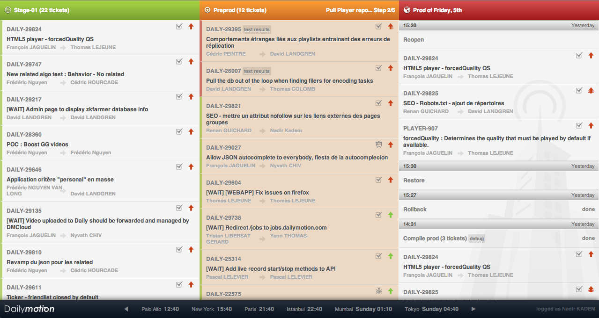
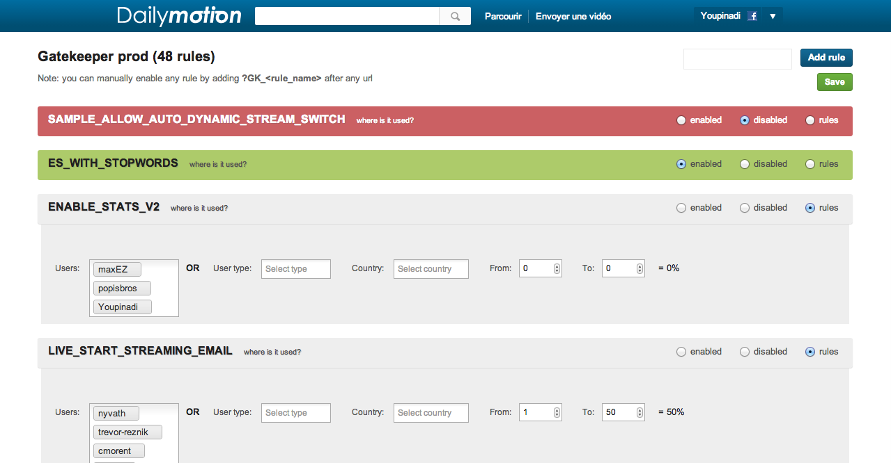

Nadir Kadem
Cell:
+33 (0)6.60.82.77.92
Email:
nadir.kadem@gmail.com
Github:
@Youpinadi
Age:
I am a senior web developer and web addict, passionate about by web technologies. I enjoy my work, teamworking on cool projects and have plenty ideas. I'm currently interessed in React and functional programming. I'm always motivated.
- Experience
-
Dailymotion Lead Front Developer 2006-2016
- Management/recruitment/training of a team of 13 developers
- Worked on the next dailymotion internal SDK (ES6) + added a simple relay implementation
- Introduced React in Dailymotion (created an universal POC), and pushed the company to switch
- Worked on the general release workflow and helped build our release system (we ship code to production several times a day) 
- Added the GateKeeper concept (a configurable wall in front of functionalities) to Dailymotion. The GateKeeper is called hundreds of millions of times per day. 
- Introduced the Dailymotion Toolkit to drastically improve speed of development and UX coherence all over the site
- Switched the site to TWIG (doubling page speed)
- New flash player (new architecture + switch to actionscript 3) with another developer
- HTML5 version of the site (html5 video player)

- HTML5 interface for Google TV/Chrome Webs Store and future set top boxes :
Stream

Observimmo Developer - Courbevoie, 2003-2006
- Switch the site from php4 to php5 (object oriented)
- Developed new functionalities on the site, and real estate sites leechers
- Developed a ruby client to insert new real estate classified ads
Flipside (Vivendi Universal) Developer - Paris - 2000-2003
- Developed the site back office in ASP
- Worked in a team of 10 developers on a Java multiplayer game (wordox) in Budapest, Hungary
- Developed/ported some casual games on mobile phone (Java MIDP)
- Skills
-
Programming skills
- Python
- Ruby
- Java
Frameworks/libs
- React, redux, mobX
- Javascript: React, Redux, Angular
- CSS: SCSS, less, emotion, styled components, glamorous
- Animation: konva, react-motion, react-spring
Work environment
- System: Mac OSX, Linux
- Version control: git
Languages
- French: fluent
- English: fluent
- German: not so fluent
- Japanese: learning in progress
- Education
-
Institut Universitaire de Belfort-Montbéliard (UTBM) 2000
Obtention du DUT Informatique
Lycée Courbet 1998
Obtention du Bac Scientifique (mention assez-bien)
- Hobbies
-
- Building simple things, just for fun, here are a few examples:
- Books (Asimov, Pratchett, Steinbeck, Zelazny, Yourcenar, Camus)
- Music (i try to play guitar)